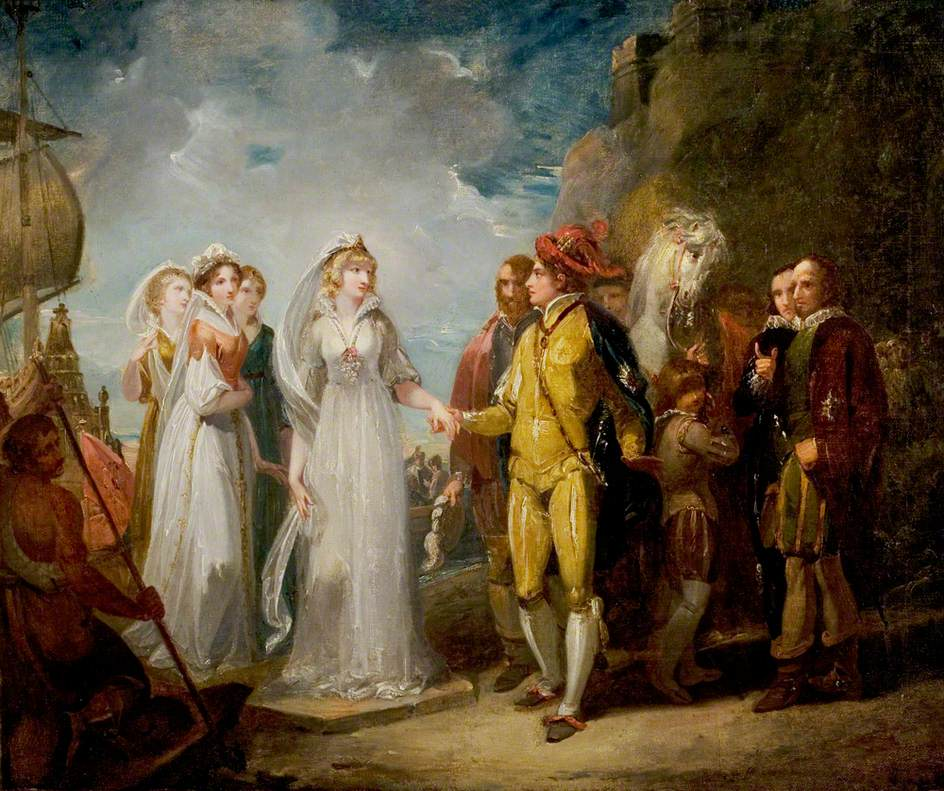

Love's Labour's Lost is one of William Shakespeare's lesser known comedies. It takes place in Navarre, Spain and is about King Ferdinand and his three lords swearing to study, fast, and not see women for 3 years. However, the king has forgotten that the Princess of France and her ladies are coming to discuss business.
When the women arrive, the men immediately fall in love and try to woo their respective crushes without any of the other men knowing since doing so would be treasoneous.
 About the Playwright